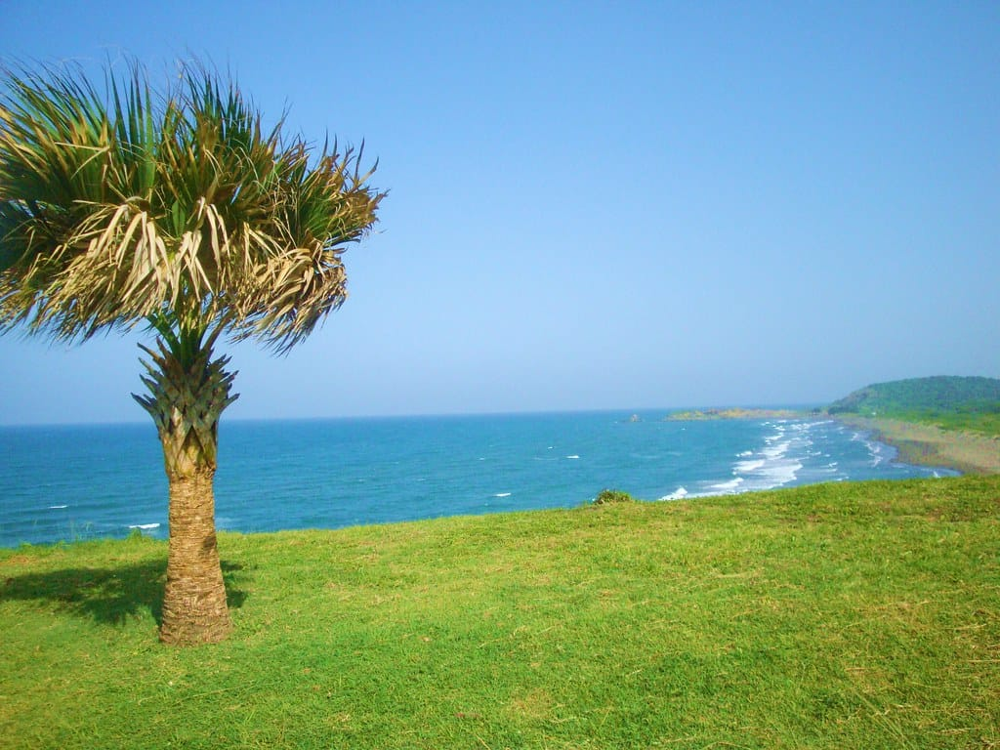
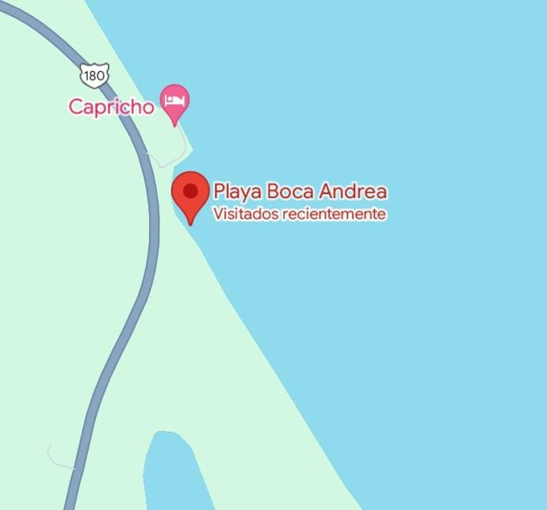

|

|
Playa Andrea
Ubicada en el Estado de Veracruz, MéxicoBrinda un ambiente calmo, gran cantidad de vegetación y árboles con sombra, por lo que es un sitio ideal para hacer picnics o realizar actividades al aire libre.
Como tal, es una playa sin servicios, por lo que a pie de la playa no encontrarás palapas, restaurantes ni hoteles, por lo que no encontrarás mucha gente, la mayoría pasa a esta playa para tomar un poco de sol, tomar algunas fotos y de ahí tomar de nuevo su camino en la carretera.Precio: $2,387 MXN
|

|